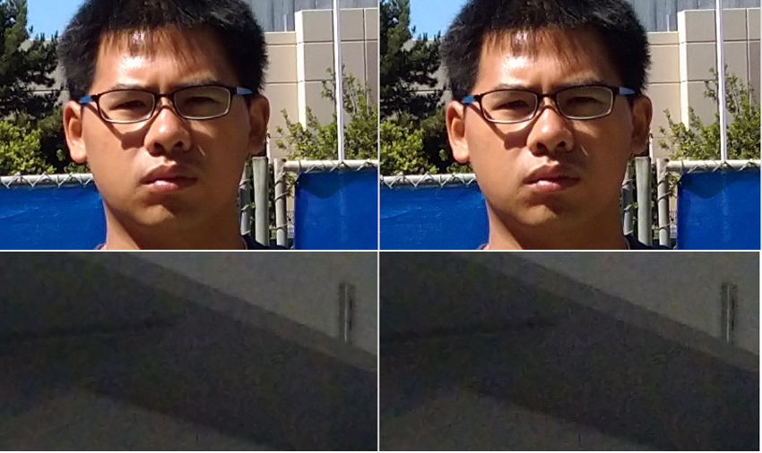
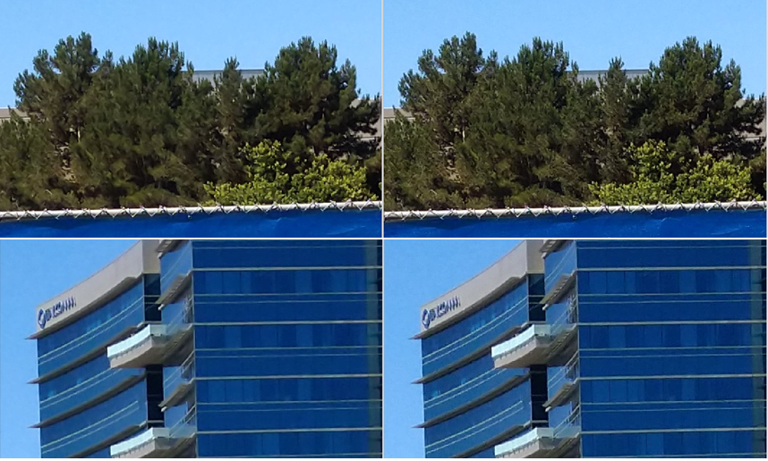
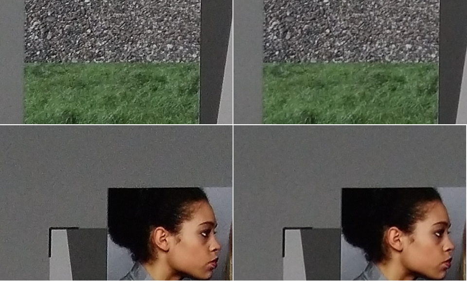
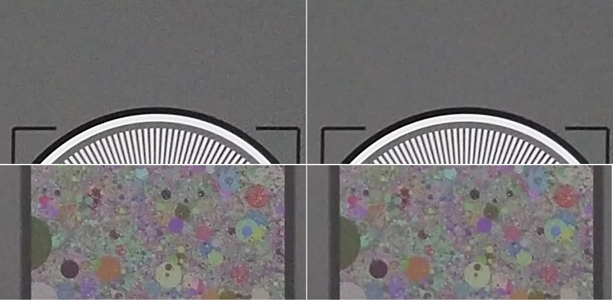
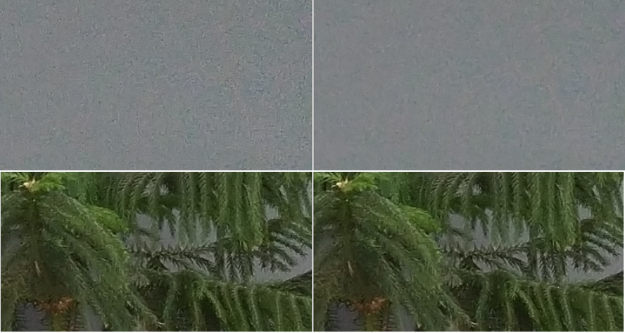
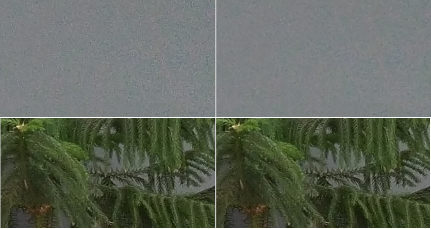
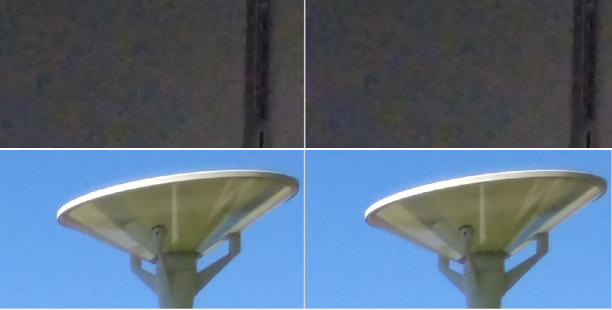
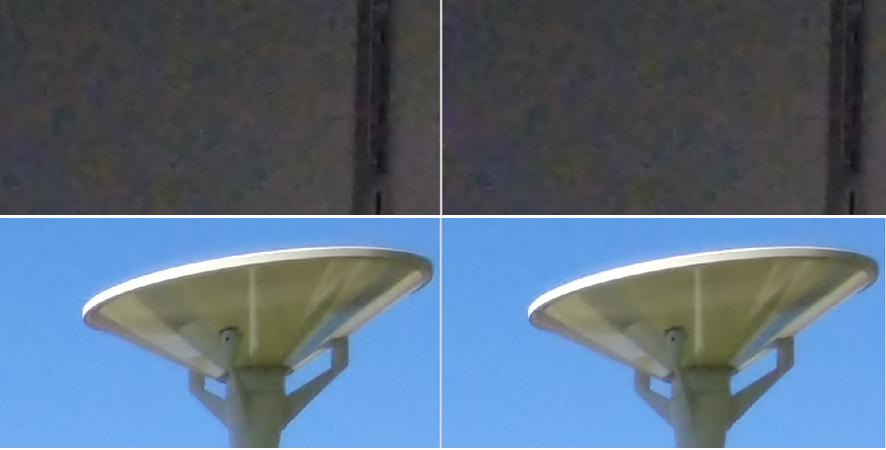

The following examples illustrate the effects of adjusting specific ABF parameter values for a preview or video project.
Effects of the edge softness parameter
Figure : (L) edge_softness=3, (C) edge_softness=8, (R) edge_softness=12. A
larger value results in softened edges, less noise, and less detail.

Effects of the distance kernel parameters
Figure : (L) distance_ker={{3,2,1} {3.2.1}}, (R)
distance_ker={{4,2,1} {4.2.1}}. Right column images are noisier, with many
artifacts. Left column images using default values give a good balance of
noise/detail in most cases.

Effects of the curve offset parameters
Figure : (L) curve_offset={20, 20, 20, 20},
(R) curve_offset={0,0,0,0}. Higher curve_offset smooths out the details.

Effects of the block/pixel matching parameters
Figure : (L) Pure pixel matching, (R) Pure block
matching

Effects of noise preservation strength parameters
Figure : (L) noise_prsv_lo = {0.2, 0.2},
noise_prsv_hi = {0.2, 0.2}, (R) noise_prsv_lo = {0.0, 0.0}, noise_prsv_hi =
{0.2, 0.2}. The setting for the right-hand images results in artifact reduction
and some loss of detail.

Effects of RNR radial gain table
Figure : (L) RNR off in ABF. Radial_gain_table
= {255, 255, 255, 255, 255} {255, 255, 255, 255, 255}, (R) Radial_gain_table =
{255, 255, 114, 67, 43} {255, 255, 114, 67, 43}


- Effective corner noise reduction (top row of plots cropped at image corner)
- No impact on details at image center (bottom row of plots cropped at image center)
- With the default control points, the center 50% FOV has no RNR adjustment
Figure : (L) Radial_gain_table = {255, 255,
213, 117, 142} {255, 255, 213, 117, 142}, (R) Radial_gain_table = {255, 255,
183, 135, 98} {255, 255, 225, 225, 225}


- All images are cropped at image corner.
- The left-hand setting has RNR adjustment for both edge softness and noise preservation. The right-hand setting has adjustment only for edge softness. Note the results are similar.
- In most cases, the preferred RNR adjustment is achieved with just the edge softness adjustment.